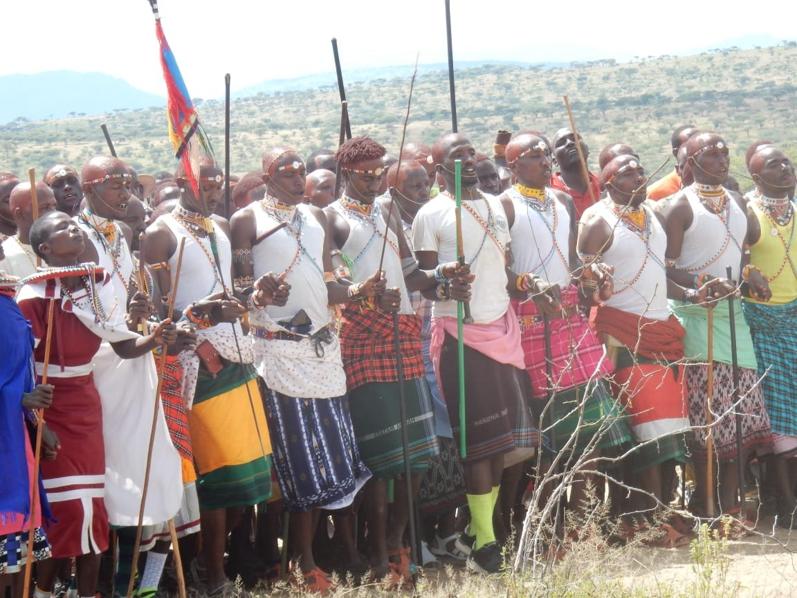

Our community
Naisuyo is owned and run by the Maasai community of this part of Laikipia — this page is about us, our land, and how we live alongside the wildlife around us.

Built inside our own manyatta
Naisuyo Campsite is culturally built, set within a Maasai manyatta rather than alongside one. That distinction matters to us: it means our guests spend real time with our origins and cultural structures, guided by the Indigenous people who actually live here — not a recreation built for visitors.
Our elders hold the knowledge that shapes how we host, farm, track and conserve. When you sit at our campfire or join a beading session, you are spending time with the people this knowledge belongs to.

Experts in this land, not actors on it
The people who lead your game drive, walk you through the bush, or sit with you at the fire are specialists — trackers, conservationists and craftspeople with knowledge built over a lifetime here. What you take part in during your stay is drawn from that same working knowledge, shared with you directly.

Traditional conservation
We have lived side by side with wildlife here for centuries, and that is not an accident — it depends on specific, learned skills: reading animal behaviour, managing grazing and water, and knowing when and how to move. Our guides pass that knowledge on directly during bush walks and tracking outings, rather than presenting it as a fact on a signboard.

Beading, blacksmithing, herbal knowledge
Beading is done by expert Maasai women in our community; blacksmith work and herbal medicine are held by others. Each is a specific skill, not a general "tradition" — and each is still practised daily, not staged for a visit.
Want to know more before you visit? Ask us anything on WhatsApp — about our community, our guides, or what a stay actually looks like.